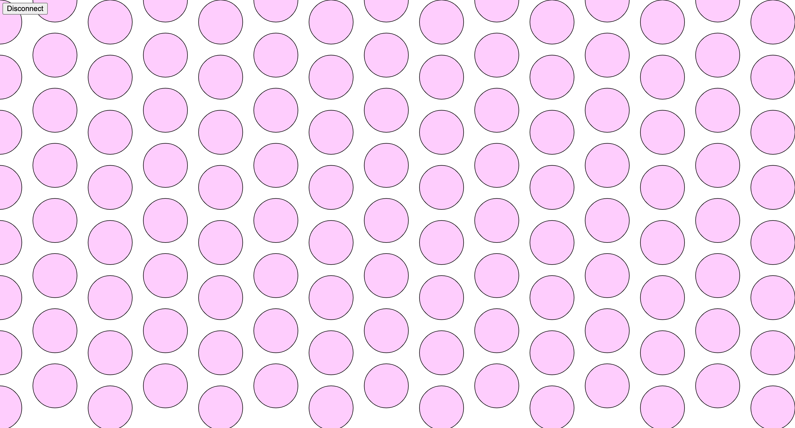
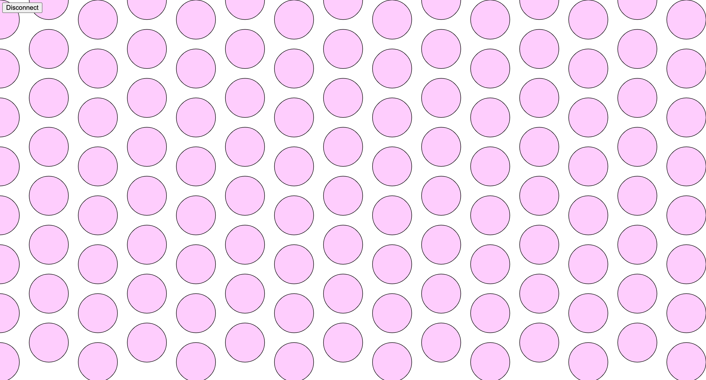

Here is all the documentation for assignment 6!
Here is all the documentation for assignment 6!
I decided to use the white led, photosensor and IR receiver. The LED is connected to PWM pins to control the brightness of each color. Resistors are 255 for red and green and 100 for blue. See A2 for calculations. The photosensor has a pull down resistor of 10K ohms, which is much higher than necessary but doesn't prevent the sensor from working.
 

Using the top 6 buttons on the IR remote allows you to control the color values. It starts at 255 and you can decrease or increase the value of the red, green and blue. The alpha value for transparency is controlled by the photosensor. It is mapped to 0 to 255 and was able to read nearly that whole range. The lowest value observed was around 10 and the highest 235. The LED on off state is controlled by the mouse placement and the color is controlled by the IR receiver.
#define DECODE_NEC
#include <IRremote.h>
int receiver = 6;
int redLed = 11;
int greenLed = 10;
int blueLed = 9;
int redVal = 255;
int greenVal = 255;
int blueVal = 255;
void setup() {
Serial.begin(9600); // set serial to the correct baud rate
IrReceiver.begin(receiver, ENABLE_LED_FEEDBACK); // start receiver, enable feedback LED
pinMode(A0, INPUT); // set the pin for photosensor for input
pinMode(redLed, OUTPUT); // set the pin for the red led to output
pinMode(greenLed, OUTPUT); // set the pin for the green led to output
pinMode(blueLed, OUTPUT); // set the pin for the blue led to output
}
void loop() {
if (IrReceiver.decode()) { // check if receiver data is available and decode
IrReceiver.resume(); // receive next val
switch (IrReceiver.decodedIRData.command) { // check decoded result against the following cases
case 0x45: // if the power button was pressed
redVal = constrain(redVal + 10, 0, 255); // set the red value 10 higher, constraining between 0 and 255
break;
case 0x44: // if the rewind button was pressed
redVal = constrain(redVal - 10, 0, 255); // set the red value 10 lower, constraining between 0 and 255
break;
case 0x46: // if the vol+ button was pressed
greenVal = constrain(greenVal + 10, 0, 255); // set the green value 10 higher, constraining between 0 and 255
break;
case 0x40: // if the play/pause button was pressed
greenVal = constrain(greenVal - 10, 0, 255); // set the green value 10 lower, constraining between 0 and 255
break;
case 0x47: // if the func/stop button was pressed
blueVal = constrain(blueVal + 10, 0, 255); // set the blue value 10 higher, constraining between 0 and 255
break;
case 0x43: // if the fast forward button was pressed
blueVal = constrain(blueVal - 10, 0, 255); // set the blue value 10 lower, constraining between 0 and 255
break;
}
Serial.print(redVal); // print the red value
Serial.print(","); // add a space
Serial.print(greenVal); // print the green value
Serial.print(","); // add a space
Serial.print(blueVal); // print the blue value
Serial.print(","); // add a space
Serial.println(map(analogRead(A0), 0, 1023, 0, 255)); // read in the photosensor value and map to the appropriate range
}
if (Serial.read() == 1) { // read in from the serial port and if it is a 1
analogWrite(redLed, redVal); // turn the red led on to the appropriate value
analogWrite(greenLed, greenVal); // turn the green led on to the appropriate value
analogWrite(blueLed, blueVal); // turn the blue led on to the appropriate value
} else {
analogWrite(redLed, 0); // turn all the led's off
analogWrite(greenLed, 0);
analogWrite(blueLed, 0);
}
}
const BAUD_RATE = 9600;
let port, connectBtn, datain, col;
function setup() {
setupSerial(); // run the set up function
createCanvas(windowWidth, windowHeight); // create a canvas the same size as the windo
}
function draw() {
const portIsOpen = checkPort(); // check if the port is open
if (!portIsOpen) return; // if the port is closed, exit loop to try again
datain = port.readUntil("\n").trim().split(","); // read the next line from the port and split up the values
col = color(Number(datain[0]), Number(datain[1]), Number(datain[2]), Number(datain[3])); // cast as numbers and create a color object
background(255); // make the background white
fill(col); // set the object fill to the inputted colors
for (let x = 0; x <= windowWidth; x += 100) { // working in columns across the window
if (x % 200 == 0) { // on every other column
for (let y = 40; y <= windowHeight; y += 100) { // starting from an offset and working down the row
circle(x, y, 80); // draw a circle
}
} else { // on the other columns
for (let y = 0; y <= windowHeight; y += 100) { // starting from the top and working down
circle(x, y, 80); // draw a circle
}
}
}
if (mouseY >= windowHeight / 2) { // if the mouse is in the bottom part of the screen
port.write(1); // write a 1 to the port
} else {
port.write(0); // write a 0 to the port
}
}